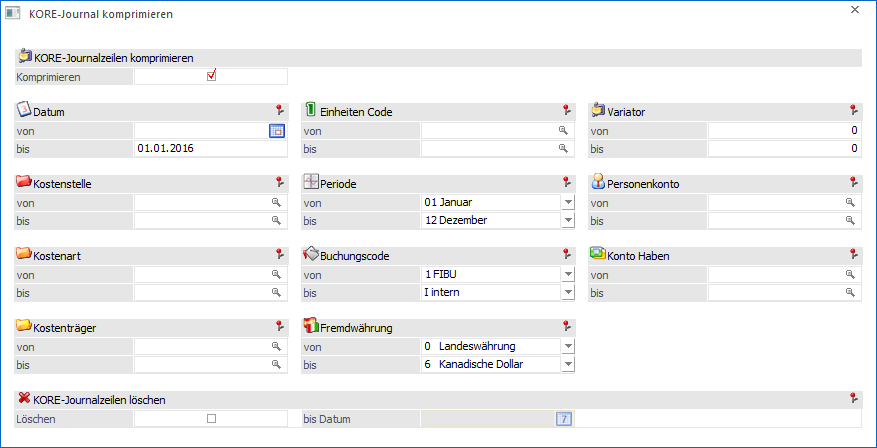
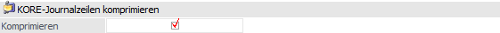
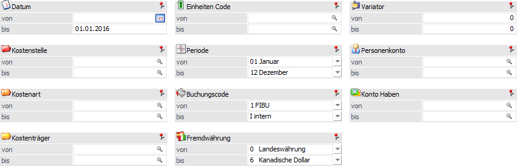

Mit Hilfe des Menüpunkts…
1 WinLine START
1 Abschluss
1 KORE-Journal komprimieren
… können die Journalzeilen der WinLine KORE zu einer komprimierten Zeile zusammengefasst bzw. nicht mehr benötigte Journalzeilen gelöscht werden.
Achtung
Das Komprimieren bzw. Löschen von Journalzeilen kann nicht rückgängig gemacht werden!

Statistik komprimieren

Ø Komprimieren
Durch Aktivierung der Option "Komprimieren" kann das Journal verdichtet / komprimiert / zusammengefasst werden. Hierbei werden all jene Zeilen des Journals zu einem Satz zusammengefasst, bei denen die Elemente der unten aufgeführten Selektion identisch sind (ausgenommen "Datum").
Dabei ist zu beachten, dass auch die "Perioden", die "Einheiten", die "Variatoren" und die "Konten" die gleichen Werte enthalten müssen!
Achtung
Für das Komprimieren von Statistikzeilen muss das Eingabefeld "Datum bis" (siehe Bereich "Selektion") mit einem Datum versehen werden.
Selektion

Wird die Option "Komprimieren" aktiviert, so kann eine Selektion vorgenommen werden, aufgrund welcher das Journal verdichtet / komprimiert wird.
Achtung
Bei der Angabe "Datum bis" handelt es sich um eine Pflichteingabe!
KORE-Journalzeilen löschen
Ø Löschen
Durch Aktivieren der Option "Löschen" können Journalzeilen gelöscht werden. Hierfür muss das Eingabefeld "bis Datum" mit einem Datum versehen werden.
Hinweis
Diese Option ist nur dann sinnvoll, wenn wirklich keine Journalzeilen aus dem davorliegenden Zeitraum (siehe Feld "bis Datum") mehr benötigt werden.
Ø bis Datum
An dieser Stelle kann, nach Aktivierung der Option "Löschen", angegeben werden, bis zu welchem Datum die Journalzeilen der WinLine KORE gelöscht werden sollen.
Buttons

Ø Ok
Durch Drücken des Buttons "Ok" bzw. der Taste F5 werden die Journalzeilen (nach einer Sicherheitsabfrage) komprimiert und / oder gelöscht.
Achtung
Dieser Vorgang kann nicht rückgängig gemacht werden!
Ø Ende
Durch Anwahl des Buttons "Ende" bzw. der Taste ESC wird das Fenster geschlossen.